SMGT 430/530: Introduction to Sport Analytics
Unit 1: Estimating Team and Player Strength
Pythagorean Formula
Bradley-Terry Model
Plus-Minus Models
Unit 2: Reducing Noise in Player Evaluation
Regression to the Mean
Regularized Regression
Regularized Adjusted Plus-Minus
Unit 3: Applications of Markov Chains in Sports
Win Probability Models
Player Evaluation and In-Game Strategy
Markov Decision Processes
Unit 4: Practicum
Assignment: Article Review (SMGT 530 only)
Lessons from Sport Analytics
Colab Notebook: Introduction to R
Be careful with regression
Don’t be fooled by noise
